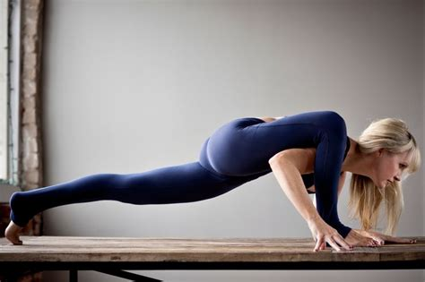

Přejít na Oddíly této stránky Nápověda k usnadnění přístupu Nabídku otevřete stisknutím
alt +
/ Facebook
Vytvořit nový účet Použití této funkce vám bylo dočasně zablokováno.
Použití této funkce vám bylo dočasně zablokováno.
Zdá se, že jste postupovali příliš rychle a zneužívali jste tuto funkci. Proto vám možnost jejího používání byla dočasně zablokována.
Čeština English (US) Slovenčina Русский Tiếng Việt Deutsch Français (France) Български Polski Română Español
Zaregistrovat se Přihlásit se Messenger Facebook Lite Watch Lidé Stránky Kategorie stránek Místa Hry Lokality Marketplace Facebook Pay Skupiny Pracovní nabídky Oculus Portal Instagram Místní Dobročinné sbírky Služby Volební informační centrum Informace Vytvořit reklamu Vytvořit stránku Vývojáři Kariéra Soukromí Cookies Volby reklamy
Smluvní podmínky Nápověda Nastavení Záznamy o aktivitách
Facebook © 2021